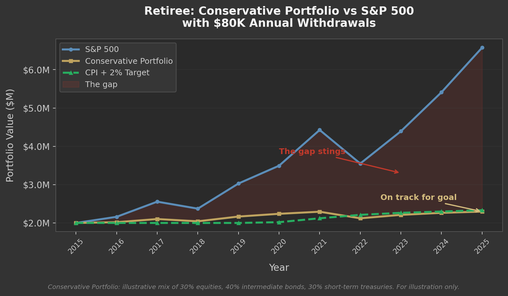
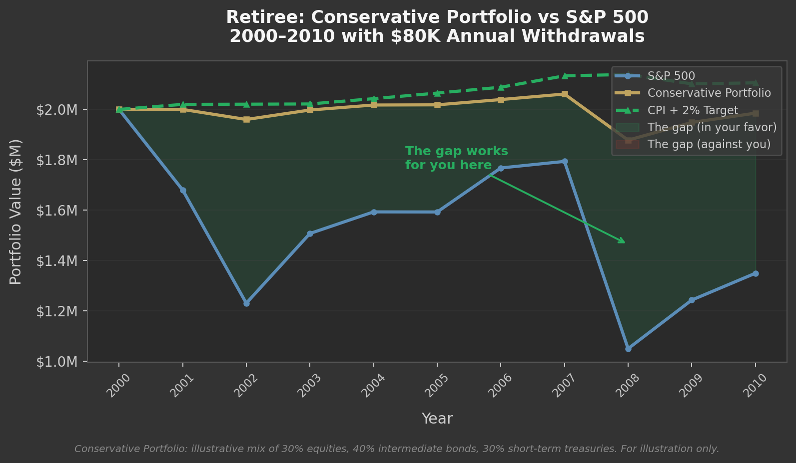

Ten years ago I ran about 100 miles a month. I trained for speed, though I was never that fast. I raced half marathons and thought about pace constantly. Then my body started breaking down. Injuries that used to take a week to heal took months. My Achilles, my IT band, my hip, and eventually my back. I spent two years fighting it. I met a lot of physical therapists, refused to accept that my 40-year-old body wasn't my 30-year-old body, and kept pushing the same mileage, the same intensity, and kept getting hurt.
Eventually I figured it out. I stopped running for speed and started training for my actual life. Strength work. Yoga. Long walks. Slow runs when my body felt good. I'm in better shape now than I was during the injury years, and I enjoy it more. But it required letting go of what my younger self thought training was supposed to look like.
Investing works the same way. You have to be honest about where you are, set goals that reflect your actual life, and then measure your progress against those goals. Not against someone else's race.
The Simple Years
When you're young, you can run hard and put in the miles. The body can take it. Financially it's the same: save aggressively, invest aggressively, let compounding work. A 30-year runway absorbs bad years. You don't need much nuance.
The Game Changes
The hard part comes when the future gets closer to the present. You're 50. Retirement is 10 years out. The kids are in high school. Your parents are aging. The goals that used to be abstractions are now line items with deadlines.
And just like the runner who can't stop chasing their old pace, the instinct is to keep investing the way you always have. Stay aggressive. Measure yourself against the S&P. Chase maximum growth. The S&P was up 25% last year and your portfolio was up 9%, and that gap stings. It feels like money left on the table. And it was.
But were you supposed to be up 25%? If you're on track and your portfolio was built to protect that timeline, the answer is no. When the market drops 20% and your conservative portfolio drops 6%, that same gap is working for you. The money you "missed out on" during the rally is money you didn't lose during the correction. You can't have one without the other.
Accepting this is the financial version of accepting that your body has changed. It's not giving up. It's being honest about where you are and focusing on progress toward your actual goals. Investment performance relative to the S&P is one input. It's not the scorecard.
The Right Scoreboard
Once the game changes, the benchmark needs to change with it.
A retiree drawing $80,000 a year from a $2 million portfolio doesn't need growth. They need their money to last. The right benchmark is CPI + 2%: inflation plus a real return cushion that keeps pace with withdrawals. In a year where the S&P returns 20% and their portfolio returns 6%, measured against the market they look terrible. Measured against their actual goal, they're right on track. That gap between the portfolio and the S&P is visible and it stings. Staying the course when you can see that gap every quarter takes real discipline.

But look at what happens during a bad decade. From 2000 to 2010, the S&P got crushed twice while the conservative portfolio held steady. That same gap that stung during the bull market was protection during the crash.

The benchmark should match the mission. When it does, the scoreboard tells you something useful instead of something misleading.
When Pushing Harder Is the Right Call
Returns matter. The difference between 8% and 10% annualized over 20 years on a million dollars is roughly $1.3 million. An investment property, a business, a concentrated bet in your area of expertise, these can generate returns well above public markets. But they require execution, and the calculus changes dramatically depending on where you are in life.
A 25-year-old has the runway to absorb a total loss and recover. They can take big swings. The irony is they rarely have the experience or judgment to take the right ones. A 50-year-old has decades of expertise, relationships, and pattern recognition. They know exactly which opportunities are real. But a bad outcome at 50 carries consequences a 30-year runway would have absorbed easily.
The answer in both cases is honesty. If the opportunity is real, find a way to minimize the risk: take on a partner, start smaller, structure the deal to limit the downside. Or be honest that the risk isn't worth it right now and walk away. The opportunity doesn't change. What changes is what you can afford to lose.
Invest for the Life You're Living
I wasted two years fighting my body because I couldn't be honest about where I was. I kept measuring myself against the runner I used to be instead of training for the person I'd become. The people who struggle most with their portfolios are doing the same thing. They're chasing a benchmark that made sense 20 years ago, when their goals were different and their timeline was long.
Be honest about where you are. Set goals that match your actual life. Then focus on your progress toward those goals, knowing that relative investment performance is only one part of getting there. Your timeline matters. Your cash needs matter. Your goals themselves will evolve. When any of those change, your portfolio should react to that. Not to whatever the market did last quarter.
The question was never whether you beat the market. It was whether your money is getting you closer to the life you want. Train for that.